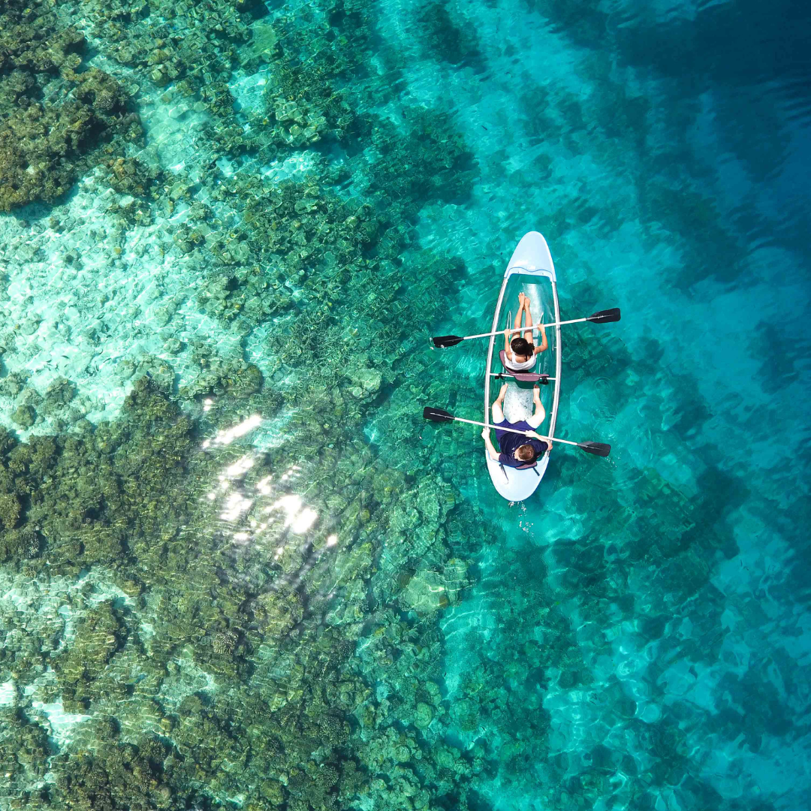
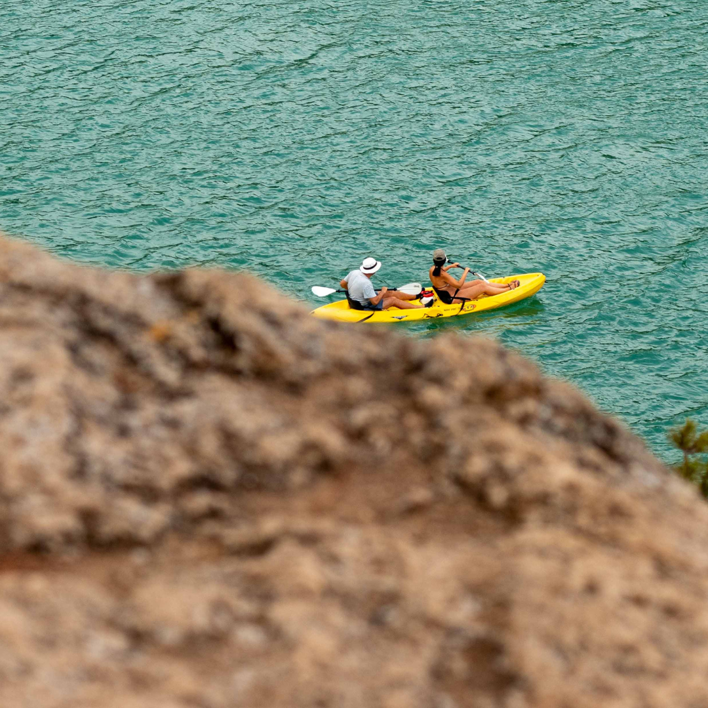

Kayaking Blog
My First Trip to Blue Heart Springs
It was a sunny Saturday when we packed up our kayaks and headed out to Buhl. The water was crystal clear, and the springs were even more magical in person. We paddled slowly, taking in the silence and the beauty around us.
Top 5 Kayaking Tips for Beginners
If you’re new to kayaking, start small. Calm water, the right paddle size, and wearing your life jacket properly are just the beginning. Here are five easy tips to make your trip smoother and safer.